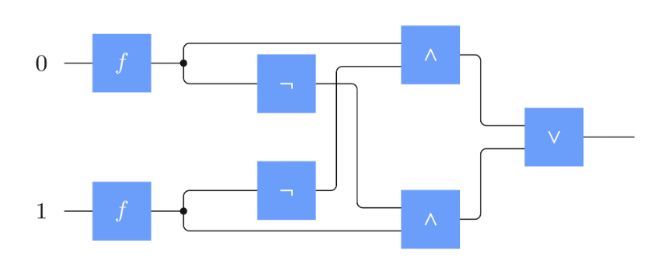
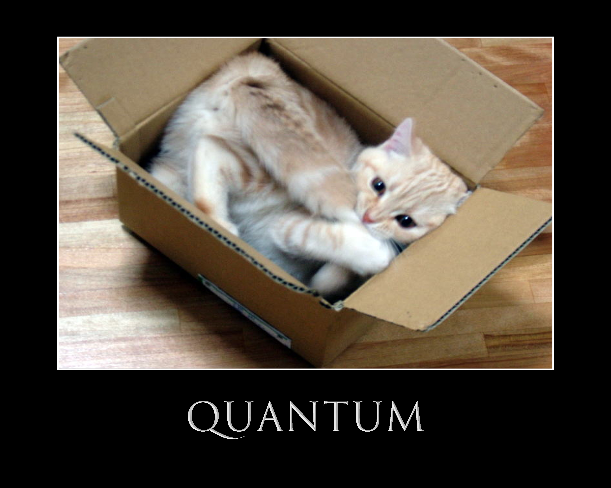
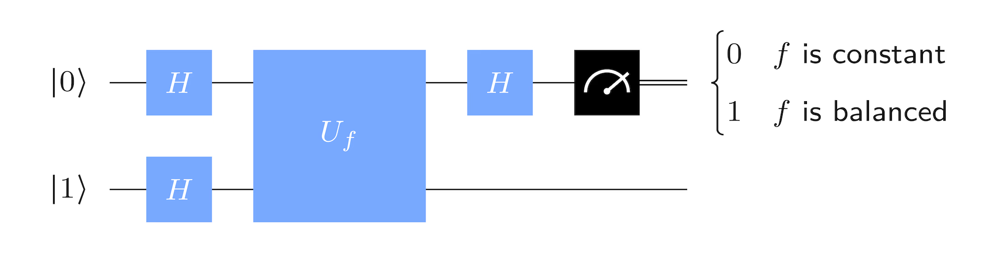
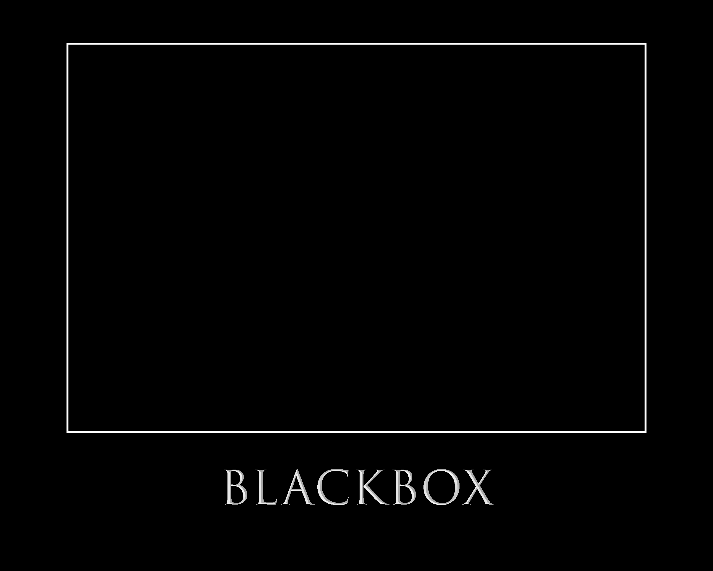
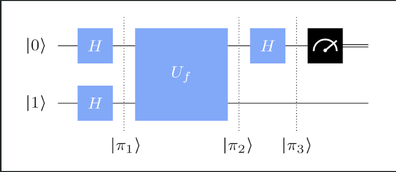
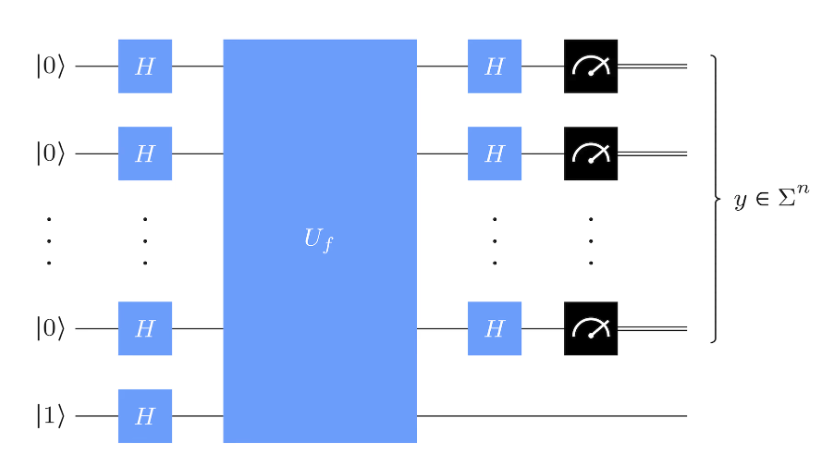

Deutsch Algorithm
Objective
Tell if function \(f: \Sigma \rightarrow \Sigma\) for \(\Sigma=\{0,1\}\) is balanced or constant
 \[
\begin{array}{c|c|c}
a & f_1(a)& f_4(a)\\ \hline
0 & 0 & 1\\
1 & 0 & 1
\end{array}
\]
\[
\begin{array}{c|c|c}
a & f_1(a)& f_4(a)\\ \hline
0 & 0 & 1\\
1 & 0 & 1
\end{array}
\]
\[ \begin{array}{c|c|c} a & f_2(a)& f_3(a)\\ \hline 0 & 0 & 1\\ 1 & 1 & 0 \end{array} \]
How to determine type of \(f\) ?
Algorithmn that returns \(0\) for constant and \(1\) for balanced
For two bits equal to XOR
\[ \begin{array}{c|c|c} \text { function } & \text { bits } & \text{XOR } \oplus\\ \hline f_1 & 00 & 0\\ f_2 & 01 & 1\\ f_3 & 10 & 1\\ f_4 & 11 & 0 \end{array} \]
Classic Solution

Circuit
Implementation Python
Implementation Python
Quantum Solution

Circuit
Deutsch Quantum Circuit
- Inital State \(|1\rangle \otimes |0\rangle = |1\rangle|0\rangle = |1\rangle0\rangle\)
- Circuit: \(\begin{cases}0 & |(I \otimes P_0)(I \otimes H) \times U_f \times (H \otimes H)|10\rangle|^2 = 1\\ 1 & |(I \otimes P_1)(I \otimes H) \times U_f \times (H \otimes H)|10\rangle|^2 = 1\end{cases}\)
Elements
Single Qubit
- Qubit: Linear Combination \(|\psi\rangle=a|0\rangle+b|1\rangle=\binom{a}{b}\)
- Must have Euclidean Norm \(\|\psi\|=\sqrt{\sum_{k=1}^n\left|\alpha_k\right|^2}=1\)
Operation Single Qubit
- Operation modeled as Unitary Matrix \(U\) acting on \(|\psi\rangle\)
\[ U|\psi\rangle=\left(\begin{array}{ll} u_1 & u_2 \\ u_3 & u_4 \end{array}\right)\binom{a}{b}=\binom{u_1 a+u_2 b}{u_3 a+u_4 b} \]
Result is a new qubit state with preserved norm \(\| U|\psi\rangle\|=\||\psi\rangle \|\)
Multiple operations (e.g. \(U_1\), \(U_2\), \(U_3\)) applied in sequence act via matrix multiplication: \(U_{\text{total}} = U_3 U_2 U_1\) (Order matters not commutative)
Hadamard Gate
\[ \begin{aligned} H &= \begin{pmatrix} \frac{1}{\sqrt{2}} & \frac{1}{\sqrt{2}} \\ \frac{1}{\sqrt{2}} & -\frac{1}{\sqrt{2}} \end{pmatrix} &= \frac{1}{\sqrt{2}}\begin{pmatrix} 1 & 1 \\ 1 & -1 \end{pmatrix} \end{aligned} \]
\(|0\rangle=H|+\rangle\)
\(H|0\rangle=|+\rangle\)
Hadamard Gate
\[ \begin{aligned} H &= \begin{pmatrix} \frac{1}{\sqrt{2}} & \frac{1}{\sqrt{2}} \\ \frac{1}{\sqrt{2}} & -\frac{1}{\sqrt{2}} \end{pmatrix} &= \frac{1}{\sqrt{2}}\begin{pmatrix} 1 & 1 \\ 1 & -1 \end{pmatrix} \end{aligned} \]
\(|1\rangle=H|-\rangle\)
\(H|1\rangle=|-\rangle\)
Mutli Qubit System
In general, a two-qubit state has the form:
\[|\Psi\rangle = \alpha_{00}|00\rangle + \alpha_{01}|01\rangle + \alpha_{10}|10\rangle + \alpha_{11}|11\rangle = \begin{pmatrix} \alpha_{00} \\ \alpha_{01} \\ \alpha_{10} \\ \alpha_{11} \end{pmatrix}\] with \(\sum |\alpha_{ij}|^2 = 1\)If qubits are not entangled, the system state can be written as a tensor product of individual qubit states (product states):
\[|\psi\rangle \otimes |\phi\rangle = \begin{pmatrix} a \\ b \end{pmatrix} \otimes \begin{pmatrix} c \\ d \end{pmatrix} = \begin{pmatrix} a c \\ a d \\ b c \\ b d \end{pmatrix}\]
Operations on Multi Qubit Systems
Operations on multi-qubit systems are represented by unitary matrices acting on the full state vector. For 2 qubits: \(U \in \mathbb{C}^{4 \times 4}\)
If each qubit is operated on independently, use the tensor product of single-qubit gates:
\((U \otimes V)(|\psi\rangle \otimes |\phi\rangle) = (U|\psi\rangle) \otimes (V|\phi\rangle)\)
Example: Apply Hadamard on qubit 1 and Identity on qubit 2:
\[H \otimes I = \frac{1}{\sqrt{2}} \begin{pmatrix} 1 & 0 & 1 & 0 \\ 0 & 1 & 0 & 1 \\ 1 & 0 & -1 & 0 \\ 0 & 1 & 0 & -1 \end{pmatrix}\]Some gates act on multiple qubits together:
- CNOT, CZ, Toffoli, etc.
These cannot be decomposed into single-qubit gates
- CNOT, CZ, Toffoli, etc.
Query in Quantum Algorithms
- A query accesses hidden information about a function \(f: \{0,1\}^n \rightarrow \{0,1\}\). Asking for information from a “black-box”

- In classical computing: A query means evaluating \(f(x)\) for a specific input \(x\). This means in the worst case \(2^n-1\) steps.
In quantum computing:
Queries are implemented as unitary operations (called oracles) . Act on quantum superpositionsCore idea: instead of checking inputs one-by-one, a quantum algorithm queries all inputs in superposition
Unitary query gates
- Standard form (bit flip oracle):
\[ U_f |x\rangle|y\rangle = |x\rangle|y \oplus f(x)\rangle \]
Constructing \(U_f\) in Deutsch Algorithm
Remember \(y=1\)
1. \(f_1(x) = 0\)
\[\Rightarrow U_f = I = \begin{pmatrix} 1 & 0 & 0 & 0 \\ 0 & 1 & 0 & 0 \\ 0 & 0 & 1 & 0 \\ 0 & 0 & 0 & 1 \end{pmatrix}\]
2. \(f_2(x) = x\)
\(\begin{align} U_f |x\rangle|y\rangle &= |x\rangle|y \oplus f(x)\rangle= |x\rangle|y \oplus x\rangle \\ \end{align}\)
For \(x=0\): \(|0\rangle|1 \oplus 0\rangle = |0\rangle|1\rangle = |x\rangle|y\rangle\)
For \(x=1\): \(|1\rangle|1 \oplus 1\rangle = |1\rangle|0\rangle = |x\rangle|\lnot y\rangle\)
Flips \(y\) when \(x = 1\)
\[\Rightarrow U_f = \text{CNOT} = \begin{pmatrix} 1 & 0 & 0 & 0 \\ 0 & 1 & 0 & 0 \\ 0 & 0 & 0 & 1 \\ 0 & 0 & 1 & 0 \end{pmatrix} \]
Constructing \(U_f\) in Deutsch Algorithm
3. \(f_3(x) = \bar{x}\)
\(\begin{align} U_f |x\rangle|y\rangle &= |x\rangle|y \oplus f(x)\rangle= |x\rangle|y \oplus \bar x\rangle \\ \end{align}\)
For \(x=0\): \(|0\rangle|1 \oplus 1\rangle = |0\rangle|0\rangle = |x\rangle|\lnot y\rangle\)
For \(x=1\): \(|1\rangle|1 \oplus 0\rangle = |1\rangle|1\rangle = |x\rangle| y\rangle\)
Flips \(y\) when \(x = 0\)
\[\Rightarrow U_f = \text{CNOT with inverted control }=\begin{pmatrix} 0 & 1 & 0 & 0 \\ 1 & 0 & 0 & 0 \\ 0 & 0 & 1 & 0 \\ 0 & 0 & 0 & 1 \end{pmatrix}\]
2. \(f_2(x) = x\)
\(\begin{align} U_f |x\rangle|y\rangle &= |x\rangle|y \oplus f(x)\rangle= |x\rangle|y \oplus 1\rangle \\ &= |x\rangle|1 \oplus 1\rangle = |x\rangle|0 \rangle = |x\rangle|\lnot y\rangle \end{align}\)
\(\Rightarrow U_f = I\)
Always flips \(y\)
\[\Rightarrow U_{f_4} = I \otimes X = \begin{pmatrix} 0 & 1 & 0 & 0 \\ 1 & 0 & 0 & 0 \\ 0 & 0 & 0 & 1 \\ 0 & 0 & 1 & 0 \end{pmatrix}\]
Measurement
Measurement collapses a quantum state to one of the basis states with probabilities given by squared amplitudes
For a single qubit:
\(|\psi\rangle = a|0\rangle + b|1\rangle\)- Probability of outcome 0: \(|a|^2\), collapses to \(|0\rangle\)
- Probability of outcome 1: \(|b|^2\), collapses to \(|1\rangle\)
- Probability of outcome 0: \(|a|^2\), collapses to \(|0\rangle\)
Can be expressed using projection matrices. \(\langle \psi | P_i | \psi \rangle\)
- \(P_0 = |0\rangle\langle 0| = \begin{pmatrix}1 & 0 \\ 0 & 0\end{pmatrix}\) \(\langle\psi| P_0|\psi\rangle=\left(\begin{array}{ll}\bar{a} & \bar{b}\end{array}\right)\left(\begin{array}{ll}1 & 0 \\ 0 & 0\end{array}\right)\binom{a}{b}=\left(\begin{array}{ll}\bar{a} & \bar{b}\end{array}\right)\binom{a}{0}=\bar{a} a=|a|^2\)
- \(P_1 = |1\rangle\langle 1| = \begin{pmatrix}0 & 0 \\ 0 & 1\end{pmatrix}\) \(\langle\psi| P_1|\psi\rangle=\left(\begin{array}{ll}\bar{a} & \bar{b}\end{array}\right)\left(\begin{array}{ll}0 & 0 \\ 0 & 1\end{array}\right)\binom{a}{b}=\left(\begin{array}{ll}\bar{a} & \bar{b}\end{array}\right)\binom{0}{b}=\bar{b} b=|b|^2\)
After measurement with outcome \(i\):
- State collapses to \(\dfrac{P_i |\psi\rangle}{\sqrt{\langle \psi | P_i | \psi \rangle}}\)
Partial measurement: measure only part of a multi-qubit system
- Example: in a 2-qubit state, measure only the first qubit
- Result: mixed state or projected subspace, depending on whether the result is known or not
- Example: in a 2-qubit state, measure only the first qubit
Measurement destroys superposition and introduces classical randomness
Back to the quantum Circuit
Deutsch Quantum Circuit
- \(|\pi_1\rangle = (H \otimes H)|1\rangle|0\rangle\)
- \(|\pi_2\rangle = U_f(H \otimes H)|1\rangle|0\rangle\)
- \(|\pi_3\rangle = (I \otimes H)U_f(H \otimes H)|1\rangle|0\rangle\)
\(|\pi_1\rangle\)
\[ \begin{align} (H \otimes H)|1\rangle|0\rangle &= H|1\rangle H|0\rangle = |-\rangle|+\rangle\\ &=\frac{1}{\sqrt{2}}(|0\rangle-|1\rangle) \otimes \frac{1}{\sqrt{2}}(|0\rangle+|1\rangle) \\ &=\frac{1}{\sqrt{2}}\frac{1}{\sqrt{2}}((|0\rangle-|1\rangle) \otimes (|0\rangle+|1\rangle)) \\ &=\frac{1}{2}((|0\rangle-|1\rangle) \otimes (|0\rangle+|1\rangle)) \\ &=\frac{1}{2}(|0\rangle-|1\rangle)|0\rangle+\frac{1}{2}(|0\rangle-|1\rangle)|1\rangle \\ \end{align} \]
\(|\pi_2\rangle\)
\[\left|\pi_1\right\rangle=\frac{1}{2}(|0\rangle-|1\rangle)|0\rangle+\frac{1}{2}(|0\rangle-|1\rangle)|1\rangle\]
\(U_f\) applied: \[\begin{align} \left|\pi_2\right\rangle&=\frac{1}{2}(|0 \oplus f(0)\rangle-|1 \oplus f(0)\rangle)|0\rangle\\&+\frac{1}{2}(|0 \oplus f(1)\rangle-|1 \oplus f(1)\rangle)|1\rangle \end{align}\]
Using \(|0 \oplus a\rangle-|1 \oplus a\rangle=(-1)^a(|0\rangle-|1\rangle)\)
\[ \begin{align} \left|\pi_2\right\rangle&=\frac{1}{2}(-1)^{f(0)}(|0\rangle-|1\rangle)|0\rangle+\frac{1}{2}(-1)^{f(1)}(|0\rangle-|1\rangle)|1\rangle \\ &=\frac{1}{2}(|0\rangle-|1\rangle)\left[(-1)^{f(0)}|0\rangle+(-1)^{f(1)}|1\rangle\right]\\ &=\frac{1}{\sqrt{2}}(|0\rangle-|1\rangle)\frac{1}{\sqrt{2}}\left[(-1)^{f(0)}|0\rangle+(-1)^{f(1)}|1\rangle\right]\\ &=\left|-\right\rangle\left(\frac{(-1)^{f(0)}|0\rangle+(-1)^{f(1)}|1\rangle}{\sqrt{2}}\right) \end{align} \]
\(|\pi_2\rangle\)
\[ \begin{align} \left|\pi_2\right\rangle&=\left|-\right\rangle\left(\frac{(-1)^{f(0)}|0\rangle+(-1)^{f(1)}|1\rangle}{\sqrt{2}}\right) \\ &=\left|-\right\rangle(-1)^{f(0)} \frac{|0\rangle+(-1)^{f(1)-f(0)}|1\rangle}{\sqrt{2}} \\ &=(-1)^{f(0)} \left|-\right\rangle\frac{|0\rangle+(-1)^{f(0) \oplus f(1)}|1\rangle}{\sqrt{2}} \\ &= \begin{cases}(-1)^{f(0)}|-\rangle|+\rangle & \text { if } f(0) \oplus f(1)=0 \\ (-1)^{f(0)}|-\rangle|-\rangle & \text { if } f(0) \oplus f(1)=1\end{cases} \end{align} \]
state of the top/right most qubit has changed while the state of the bottom/leftmost qubit remains the same: phase kickback
\(|\pi_3\rangle\)
\[ \begin{align} |\pi_3\rangle &= (I \otimes H)|\pi_2\rangle \\ &= \begin{cases} (I \otimes H)(-1)^{f(0)}|-\rangle|+\rangle & \text{if } f(0) \oplus f(1) = 0 \\ (I \otimes H)(-1)^{f(0)}|-\rangle|-\rangle & \text{if } f(0) \oplus f(1) = 1 \end{cases} \\ &= \begin{cases} (-1)^{f(0)}|-\rangle|0\rangle & \text{if } f(0) \oplus f(1) = 0 \\ (-1)^{f(0)}|-\rangle|1\rangle & \text{if } f(0) \oplus f(1) = 1 \end{cases} \end{align} \]
- The global phase \((-1)^{f(0)}\) has no physical effect
- Final measurement on the second qubit yields:
- \(|0\rangle\) if \(f\) is constant
- \(|1\rangle\) if \(f\) is balanced
1. \(f_1(a) = 0 \Rightarrow f(0) \oplus f(1) = 0 \Rightarrow \pi_3\rangle = |-\rangle|0\rangle\) outcome: \(|0\rangle\) → constant
2. \(f_2(a): f(0)=0,\ f(1)=1 \Rightarrow f(0) \oplus f(1) = 1 \Rightarrow |\pi_3\rangle = |-\rangle|1\rangle\) outcome: \(|1\rangle\) → balanced
3. \(f_3(a): f(0)=1, f(1)=0 \Rightarrow f(0) \oplus f(1) = 1 \Rightarrow |\pi_3\rangle = -|-\rangle|1\rangle\) outcome: \(|1\rangle\) → balanced
4. \(f_4(a) = 1 \Rightarrow f(0) \oplus f(1) = 0 \Rightarrow |\pi_3\rangle = -|-\rangle|0\rangle\) outcome: \(|0\rangle\) → constant
Implementation - Numpy
import numpy as np
u_zero = np.array([[1],[0]], dtype=complex) # |0>
u_one = np.array([[0],[1]], dtype=complex) # |1>
initial_state = np.kron(u_zero, u_one) # why does this only owrk when the state is different then in the description ?
H = (1/np.sqrt(2)) * np.array([[1, 1],
[1,-1]], dtype=complex)
I = np.eye(2, dtype=complex)
p_0 = np.array([[1,0],[0,0]], dtype=complex) # |0><0|
p_1 = np.array([[0,0],[0,1]], dtype=complex) # |1><1|
def build_oracle_matrix(f):
"""
U_f : |x,y> -> |x, y ⊕ f(x)>, for x,y ∈ {0,1}.
"""
U = np.zeros((4, 4), dtype=complex)
for x in [0,1]:
for y in [0,1]:
in_idx = 2*x + y
out_y = (y + f(x)) % 2
out_idx = 2*x + out_y
U[out_idx, in_idx] = 1
return U
# functions: f1=0, f2=x, f3=1-x, f4=1
f1 = lambda x: 0
f2 = lambda x: x
f3 = lambda x: 1 - x
f4 = lambda x: 1
def deutsch(f):
U = build_oracle_matrix(f)
final_state = np.kron(H, I) @ U @ np.kron(H, H) @ initial_state #again last operation is different then definiton? in def I x H and here H x I ????
P_0 = np.kron(p_0, I) #again different then definiton? in def I x P
P_1 = np.kron(p_1, I)
prob_0 = np.linalg.norm(P_0 @ final_state)**2
prob_1 = np.linalg.norm(P_1 @ final_state)**2
if prob_0 > 0.99:
outcome = "constant"
elif prob_1 > 0.99:
outcome = "balanced"
else:
outcome = "error"
return outcome
if __name__ == "__main__":
# Test each function
out1 = deutsch(f1)
out2 = deutsch(f2)
out3 = deutsch(f3)
out4 = deutsch(f4)
print("results:")
print(f"f1 -> {out1} (expected constant)")
print(f"f2 -> {out2} (expected balanced)")
print(f"f3 -> {out3} (expected balanced)")
print(f"f4 -> {out4} (expected constant)")results:
f1 -> constant (expected constant)
f2 -> balanced (expected balanced)
f3 -> balanced (expected balanced)
f4 -> constant (expected constant)Implementation - Qiskit
from qiskit import QuantumCircuit, QuantumRegister, ClassicalRegister
from qiskit_aer import AerSimulator
from qiskit.quantum_info import Operator, Statevector
import numpy as np
def build_oracle_matrix(f):
"""
U_f : |x,y> -> |x, y ⊕ f(x)>, for x,y ∈ {0,1}.
"""
U = np.zeros((4, 4), dtype=complex)
for x in [0,1]:
for y in [0,1]:
in_idx = 2*x + y
out_y = (y + f(x)) % 2
out_idx = 2*x + out_y
U[out_idx, in_idx] = 1
return U
# functions: f1=0, f2=x, f3=1-x, f4=1
f1 = lambda x: 0
f2 = lambda x: x
f3 = lambda x: 1 - x
f4 = lambda x: 1
start_vector = Statevector.from_label("10")
def deutsch(f):
qr = QuantumRegister(2, 'q')
cr = ClassicalRegister(1, 'c')
qc = QuantumCircuit(qr, cr)
# Apply Hadamard gates
qc.h(qr[0])
qc.h(qr[1])
# Oracle
U_f = Operator(build_oracle_matrix(f))
qc.unitary(U_f, [qr[1], qr[0]])
qc.h(qr[0])
new_vec = start_vector.evolve(qc)
outcome, state = new_vec.measure()
if outcome[1] == "0":
return "constant"
elif outcome[1] == "1":
return "balanced"
return "error"
if __name__ == "__main__":
# Test each function
out1 = deutsch(f1)
out2 = deutsch(f2)
out3 = deutsch(f3)
out4 = deutsch(f4)
print("results:")
print(f"f1 -> {out1} (expected constant)")
print(f"f2 -> {out2} (expected balanced)")
print(f"f3 -> {out3} (expected balanced)")
print(f"f4 -> {out4} (expected constant)")results:
f1 -> constant (expected constant)
f2 -> balanced (expected balanced)
f3 -> balanced (expected balanced)
f4 -> constant (expected constant)Outlook
